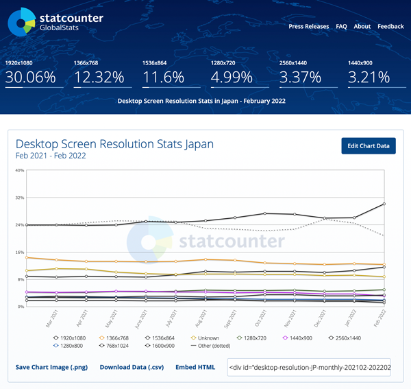
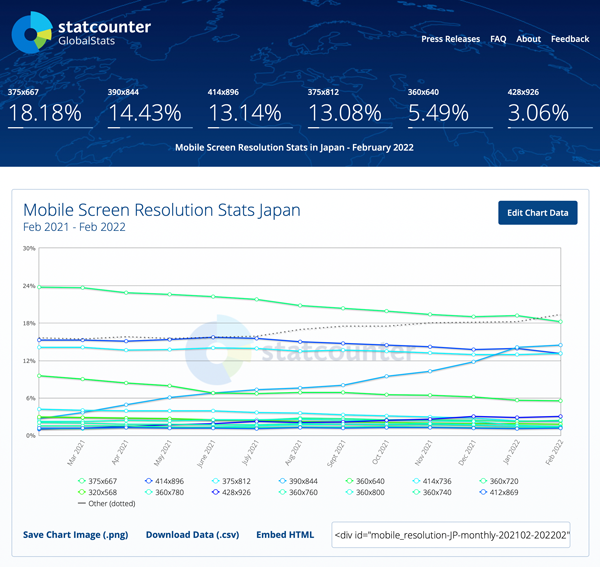

画面サイズ
PCの推奨サイズ
- 推奨サイズは「1920*1080」

シェア率の高いデバイスの等倍サイズ
- 実際には、デスクトップ全体にブラウザを使用することは少ないと思われるので「1280pxまたは1440px」で作成します
スマートフォンの推奨サイズ
- 推奨サイズは「750*1334」
- 375px*667pxが最も多いですが、Retinaディスプレイを考慮して「375px(物理的な横幅)×2倍(デバイスピクセル比)」として考えます

ブレイクポイント
range 記法
演算子には、次のものが利用できます。
- < : 指定した値より小さい
- <= : 指定した値以下
- > : 指定した値より大きい
- >= : 指定した値以上
| 意味 (単位:px) | 旧記法 | 新しい記法 | |
|---|---|---|---|
| 100 より上 | (min-width: 100.01px) | (width > 100px) | |
| 100 以上 | (min-width: 100px) | (width >= 100px) | |
| 100 以上 200 未満 | (min-width: 100px) and (max-width: 199.9px) | (100px <= width < 200px) | |
| 100 と等しい | (min-width: 100px) and (max-width: 100px) | (width = 100px) | |
| 100 以下 | (max-width: 100px) | (width <= 100px) | |
| 100 未満 | (max-width: 99.9px) | (width < 100px) |